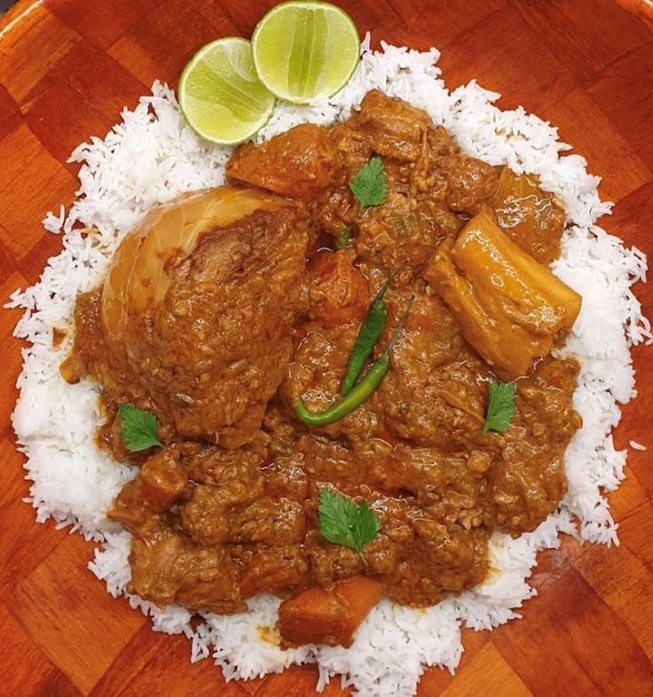

Retour à l'accueil
MAFFE

Description
Le maffé est un plat traditionnel sénégalais à base de viande (généralement du bœuf ou du poulet) cuite dans une sauce épaisse à base de pâte d'arachide, de tomates et d'épices. Il est souvent servi avec du riz blanc.
Ingrédients
- 500g de viande (bœuf ou poulet)
- 1 oignon
- 2 gousses d'ail
- 200g de pâte d'arachide
- 400g de tomates concassées
- 1 piment (optionnel)
- Sel et poivre
- Huile d'olive
Instructions
- Faites chauffer l'huile d'olive dans une grande casserole à feu moyen. Ajoutez la viande et faites-la dorer de tous les côtés. Retirez la viande et réservez.
- Dans la même casserole, ajoutez l'oignon émincé et l'ail haché. Faites revenir jusqu'à ce qu'ils soient tendres.
- Ajoutez la pâte d'arachide et les tomates concassées. Mélangez bien pour obtenir une sauce homogène.
- Remettez la viande dans la casserole, ajoutez le piment (si utilisé), le sel et le poivre. Couvrez et laissez mijoter à feu doux pendant environ 45 minutes, ou jusqu'à ce que la viande soit tendre et que la sauce ait épaissi.
- Servez chaud avec du riz blanc.